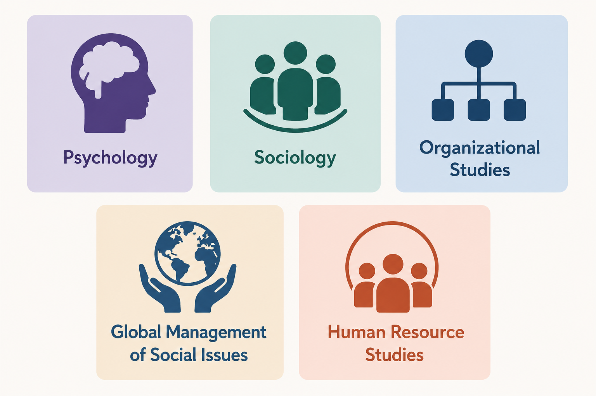
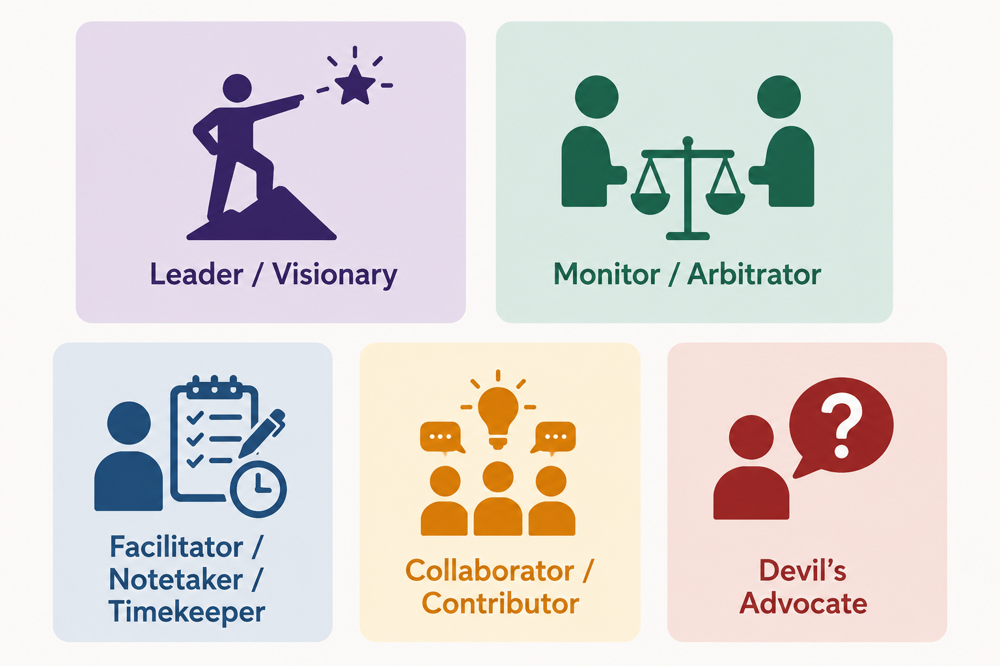

The Theory Crisis
Weekly Readings
schedule <- readODS::read_ods("schedule2.ods")New names:
• `` -> `...14`
• `` -> `...15`
• `` -> `...16`cat(paste0("* ", strsplit(schedule$Reading[1], split = "\n")[[1]]), sep = "\n")- Muthukrishna, M., & Henrich, J. (2019). A problem in theory. Nature Human Behaviour, 3(3), 221–229. https://doi.org/10.1038/s41562-018-0522-1
- Eronen, M. I., & Bringmann, L. F. (2021). The Theory Crisis in Psychology: How to Move Forward. Perspectives on Psychological Science, 16(4), 779–788. https://doi.org/10.1177/1745691620970586
Tutorial
Find a Group
Pick a card that matches your study program:
- Psychology
- Sociology
- Organizational Studies
- Global Management of Social Issues
- Human Resource Studies

Pick a card that matches your preferred or default role in team work (you don’t have to stick to this role):
- Leader / Visionary
- Monitor / Arbitrator
- Facilitator / Notetaker / Timekeeper
- Devil’s Advocate

Now, mingle and try to find group mates with similar study programs, and complementary roles in team work. Groups should comprise 3-4 people.
Find a topic
With your group, prepare a text document. At the top of the first page, write:
- Tutorial number (Tutorial 1)
- Group name (come up with your own name)
- Your names and student numbers
- Date
The purpose of this assignment is to find a topic of interest that you want to theorize about, identify what you want your eventual theory to explain, and collect some literature.
Step 1
Credit: This tutorial is based on Noah van Dongen’s course “Fundamentals: Becoming better at explaining and understanding”.
As a group, choose a topic to theorize about. Choose a topic within your field of research, or one that touches upon your field of research. The topic may be quite general, such as “the psychopathology of depression” or “territorial behavior”. It could also be more specific, such as “helping behavior in humans” or “empathy in conflict resolution”. The two restrictions are that A) it can be related to something observable, directly or indirectly. Specifically, you should be able to learn something about the topic you have chosen through observations or experiments. B) You should be able to find sufficient literature (e.g., research) on the topic (see the Fourth part of this assignment). Furthermore, it is recommended to have some experience or knowledge about the topic you choose. Note that you don’t have to be a psychology student to choose (some aspect of) psychology, but it makes things easier if you are at least familiar with some of the research that has been done on the topic. Also, it helps if you choose a topic you find interesting and don’t mind thinking about. Write down the topic you have chosen and explain in a few sentences (max 100 words) what the topic is about.
Step 2
Think of three phenomena [@nakEstablishingPsychologicalPhenomena2026] related to your topic you would like to explain. Describe these phenomena in a few sentences. List the phenomena’s components/characteristics. Indicate on what the material is based (e.g., a published empirical study, Wikipedia, personal experience, intuition). Note that you do not need to explain these phenomena yet. These phenomena should be as independent of theory (any theory) as possible. It could be that scientists disagree on the explanation of the phenomena, but this should not mean that they also disagree on the existence of the phenomena.
Step 3
Do a basic literature search on your chosen topic. Make sure that you have both general sources (e.g., textbook chapters and encyclopedia entries, such as Wikipedia) and specific sources (e.g., scientific journal articles). The aim is to have five highly relevant sources. If you cannot find five sources, check with your groupmates and the tutorial teacher and consider picking a different topic.
List the sources you have found and add hyperlinks or other reference information. For each source, make a note of why you think it is relevant. A few words or a sentence is enough. You do not have to read the whole articles yet.
Having a good search strategy is important. Indicate which search engines and/or databases you used (e.g, Google, Google Scholar, Web of Science) and the (combinations of) search terms you used.
Example
Tutorial 1
Group: The Tacky Theoreticians
Names: Caspar van Lissa (123456), Noah van Dongen (789012)
Date: 02-08-2026
Step 1
Social behavior of humans. Homo sapiens are social animals that respond to one another and their behavior is shaped by others that are in their direct vicinity. People also respond differently to situations when they are alone versus when there are other people present. The development of a person’s (cognitive) behavior is also in part determined by the presence and behavior of other people. I think my main focus will be on helping behavior.
Step 2
- Bystander effect. The probability that somebody helps a person in need decreases with the number of other people present (Blair, Thomson, & Wuensch, 2005). The individual components/characteristics are:
- Without other people present, the tendency (probability or frequency) that a person helps a victim is high.
- The tendency to help a victim decreases monotonically with the number of other people (bystanders) present.
- The tendency to help a victim never drops to 0.
- Bystander effect when the victim is in danger. The bystander effect varies across different types of situations. The bystander effect is attenuated when the situation is perceived as dangerous for the victim (Fischer et al., 2011). The individual components/characteristics are:
- Without other people present, the tendency (probability or frequency) that a person helps a victim is high.
- The tendency to help a victim decreases monotonically with the number of other people (bystanders) present.
- The tendency to help a victim never drops to 0.
- The size of the bystander effect is decreased when the situation is perceived as dangerous to the person in need of help.
- Bystander effect and danger to the helper. The probability of helping a victim declines as the dangerousness of helping increases (e.g., violent crime with a weapon), in comparison to situations that are less dangerous for the person offering help (e.g., sexual assault with no weapon) (Hart & Miethe, 2008). The individual components/characteristics are:
- Without other people present, the tendency (probability or frequency) that a person helps a victim is high.
- The tendency to help a victim decreases monotonically with the number of other people (bystanders) present.
- The tendency to help a victim never drops to 0.
- The size of the bystander effect is decreased when the situation is perceived as dangerous to the person in need of help.
- The size of the bystander effect varies with situational context. The bystander effect is smaller for sexual assault without a weapon than for violent crime with a weapon.
Step 3
Wikipedia page: https://en.wikipedia.org/wiki/Bystander_effect
- An encyclopedia page that contains general information and lists additional references Britannica page: https://www.britannica.com/topic/bystander-effect/Diffusion-of-responsibility
- An encyclopedia page that contains general information Fischer, P., Krueger, J. I., Greitemeyer, T., Vogrincic, C., Kastenmüller, A., Frey, D., Heene, M., Wicher, M., & Kainbacher, M. (2011). The bystander-effect: A meta-analytic review on bystander intervention in dangerous and non-dangerous emergencies. Psychological Bulletin, 137(4), 517–537. https://doi.org/10.1037/a0023304
- Is a meta-analysis of studies on the bystander effect and thus contains many references to studies on the bystander effect.
We used Google, Google Scholar, and Web of Science to search for relevant literature. We first used the search term “bystander effect” on Google Scholar, which already produced many hits (39100). We looked at the first three pages and selected those with titles that indicated they were about the bystander effect in (social) psychology. The expectation was that literature on the bystander effect would also be related to social behavior in a more general sense. We then searched on Web of Science to see if any further interesting titles appeared on the first three pages that we missed in Google Scholar. Finally, we searched with Google using the same search term to find more general non-scientific literature that could be of interest, again looking at titles on the first three pages. We think this was an adequate strategy, because we were only searching for a few information-dense and general items and not an exhaustive literature search. We expected that these would show up on the first few pages of the searches, because they most likely would have the term “bystander effect” in the title (Google, Google Scholar, Web of Science) and many places throughout the text (Google). Based on the name of the journal, we selected those that were about (social) psychology.
References
- Blair, C. A., Thompson, L. F., & Wuensch, K. L. (2005). Electronic Helping Behavior: The Virtual Presence of Others Makes a Difference. Basic and Applied Social Psychology, 27(2), 171–178. https://doi.org/10.1207/s15324834basp2702_8
- Fischer, P., Krueger, J. I., Greitemeyer, T., Vogrincic, C., Kastenmüller, A., Frey, D., Heene, M., Wicher, M., &
- Kainbacher, M. (2011). The bystander-effect: A meta-analytic review on bystander intervention in dangerous and non-dangerous emergencies. Psychological Bulletin, 137(4), 517–537. https://doi.org/10.1037/a0023304
- Hart, T. C., & Miethe, T. D. (2008). Exploring bystander presence and intervention in nonfatal violent victimization: When does helping really help? Violence and Victims, 23(5), 637–651. https://doi.org/10.1891/0886-6708.23.5.637
Homework
This week, you will select one “canonical version” of an existing theory, or draft your own theory from scratch (optional).
The assignment assumes that you will select an existing theory to improve upon. If you draft your own instead, go through all the steps as if you are starting from an existing theory - but instead of selecting sources from a published theoretical paper, you write your own. You may find it helpful to:
- Select relevant quotes from empirical papers instead, to substantiate the assumptions of your theory.
- Compare your work to that of other groups who have started with an existing theory.
- Come back and revise the work you’ve done this week, once you have gained a better understanding of the next steps in coming weeks.
Credit: This assignment is based on the Proposition Based Theory Specification instructions [@glocknerPBTSGuidelinesTemplates2025].
Read pages 1-4 of the Proposition Based Theory Specification (PBTS) Guideline.
PBTS Step 1
With your group, select source material for the theory (and specific version of it) to be specified.
- Decide which theory, and which version of the theory (e.g., original, revised, or latest) will be specified, including the name of the theory, the author, and the original reference. For example, I used Self-Determination Theory, a leading theory of motivation in social psychology.
- Select one canonical source for the theory specification (e.g., the original article or book chapter). If the theory is not fully specified in one source, or if you are drafting your own theory from scratch, select 2-3 key sources instead, such as relevant journal papers, or textbook chapters. For example, I used @ryanOxfordHandbookSelfDetermination2023.
- If the original theory is highly extensive (e.g., published as a book), simplify the task by focusing on its core content as represented in typical journal articles or summary chapters.
- Select specific lines within the source material that cover the theory’s key causal relations, concept definitions, operationalizations, and auxiliary assumptions. Create a spreadsheet like this with these selected sentences, label them (e.g., S1) and document the paper, page number, and ideally line number. The final version of Table 1 should include all agreed sources with page/line information, DOI, and, for books, the edition used. For example, see this spreadsheet
- All raters should agree on the selected sources. In cases of uncertainty, debate whether the sentence is indeed relevant to the theory.
- Write 100 words on your approach to Source Selection for your final paper.